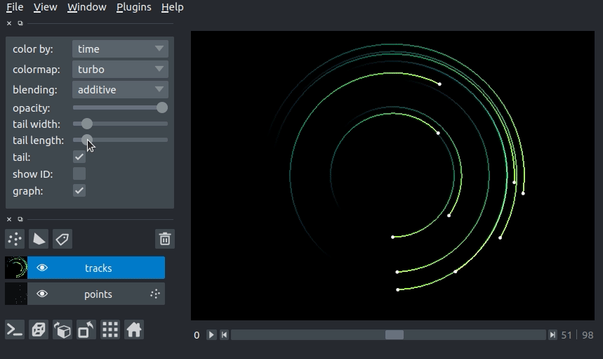
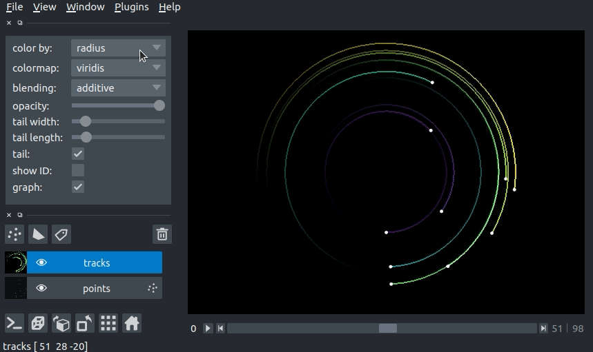

Using the tracks layer¶
In this document, you will learn about the napari Tracks layer, including
displaying tracks and defining relationships between tracks.
When to use the tracks layer¶
The tracks layer allows you to display trajectories in nD+t while visualizing
the recent history of the track via a fading tail.
Each track can have annotations associated with it using the Tracks.properties
dictionary. These properties can be used to set the colors of the tracks.
For example, when displaying tracks of different classes/types, one could automatically set color the individual tracks by their respective class/type.
A simple example¶
You can create a new viewer and add a set of tracks in one go using the
napari.view_tracks method, or if you already have an existing viewer, you can
add tracks to it using viewer.add_tracks. The API of both methods is the same.
In this example of we will overlay some tracks on an image from the Hubble space telescope:
import napari
from skimage import data
hubble_image = data.hubble_deep_field()
tracks_data = [
[1, 0, 236, 0],
[1, 1, 236, 100],
[1, 2, 236, 200],
[1, 3, 236, 500],
[1, 4, 236, 1000],
[2, 0, 436, 0],
[2, 1, 436, 100],
[2, 2, 436, 200],
[2, 3, 436, 500],
[2, 4, 436, 1000],
[3, 0, 636, 0],
[3, 1, 636, 100],
[3, 2, 636, 200],
[3, 3, 636, 500],
[3, 4, 636, 1000]
]
viewer = napari.view_image(hubble_image, name='image')
viewer.add_tracks(tracks_data, name='tracks')
napari.run()

Arguments of view_tracks and add_tracks¶
Both view_tracks and add_tracks have the following doc strings:
"""
Parameters
----------
data : array (N, D+1)
Coordinates for N points in D+1 dimensions. ID,T,(Z),Y,X. The first
axis is the integer ID of the track. D is either 3 or 4 for planar
or volumetric timeseries respectively.
properties : dict {str: array (N,)}, DataFrame
Properties for each point. Each property should be an array of length N,
where N is the number of points.
graph : dict {int: list}
Graph representing associations between tracks. Dictionary defines the
mapping between a track ID and the parents of the track. This can be
one (the track has one parent, and the parent has >=1 child) in the
case of track splitting, or more than one (the track has multiple
parents, but only one child) in the case of track merging.
See examples/tracks_3d_with_graph.py
color_by: str
Track property (from property keys) by which to color vertices.
tail_width : float
Width of the track tails in pixels.
tail_length : float
Length of the track tails in units of time.
colormap : str
Default colormap to use to set vertex colors. Specialized colormaps,
relating to specified properties can be passed to the layer via
colormaps_dict.
colormaps_dict : dict {str: napari.utils.Colormap}
Optional dictionary mapping each property to a colormap for that
property. This allows each property to be assigned a specific colormap,
rather than having a global colormap for everything.
name : str
Name of the layer.
metadata : dict
Layer metadata.
scale : tuple of float
Scale factors for the layer.
translate : tuple of float
Translation values for the layer.
opacity : float
Opacity of the layer visual, between 0.0 and 1.0.
blending : str
One of a list of preset blending modes that determines how RGB and
alpha values of the layer visual get mixed. Allowed values are
{'opaque', 'translucent', and 'additive'}.
visible : bool
Whether the layer visual is currently being displayed.
Returns
-------
layer : napari.layers.Tracks
The newly-created tracks layer.
"""
Tracks data¶
The input data to the tracks layer must be an NxD+1 numpy array or list
containing the coordinates of N vertices with a track ID and coordinate in D
dimensions. The ordering of these dimensions is the same as the ordering of the
dimensions for image layers. This array is always accessible through the
layer.data property and will grow or shrink as new tracks are either added or
deleted.
Consider the set of 4D tracks data (time + 3 spatial dimensions) defined below.
The Tracks layer assumes the first column is the track_id, the second column
is the time axis, and columns 3-5 are Z, Y, and X, respectively. Each row is one
vertex in a track. All vertices with the same track_id are joined into a
single track. In this case, we have defined 2 tracks: track 0, which goes from
[10, 10, 10] to [20, 10, 10] and track 1, which goes from [10, 8, 5] to
[7, 8, 10] (coordinates written as [x, y, z]).
track_id |
t |
z |
y |
x |
|---|---|---|---|---|
0 |
0 |
10 |
10 |
10 |
0 |
1 |
10 |
10 |
20 |
1 |
0 |
5 |
8 |
10 |
1 |
1 |
10 |
8 |
7 |
The data in the array must be sorted by increasing track_id then time, as
shown above. We can pass the example data above to the tracks layer as follows:
tracks_data = [
[0, 0, 10, 10, 10],
[0, 1, 10, 10, 20],
[1, 0, 5, 8, 10],
[1, 1, 10, 8, 7]
]
viewer = napari.view_tracks(tracks_data)
napari.run()
Tracks graph¶
We can use the tracks graph argument to define the relationships between
tracks (e.g., tracks merging or tracks splitting). The graph is defined as a
dictionary where the keys are the track_id and the values are the track_id
of the parents of the the key.
For example, if we have a track 0, which splits into tracks 1 and 2 (i.e., track 0 is the parent of tracks 1 and 2), we would define the graph as:
graph = {
1: [0],
2: [0]
}
If later tracks 1 and 2 merge into track 3 (i.e,. tracks 1 and 2 are the parent of track 3), the dictionary would become
graph = {
1: [0],
2: [0],
3: [1, 2]
}
For a full example of 3d+t tracks data with a parent graph, please see our
tracks_3d_with_graph.py example.
Using the tracks properties dictionary¶
The Tracks layer can contain properties that annotate the vertices of each
track. Tracks.properties stores the properties in a dictionary where each key
is the name of the property and the values are numpy arrays with a value for
each vertex in the track (i.e., length N for N vertices in Tracks.data).
As we will see below, we can use the values in a property to set the display
properties of the tracks (e.g., the track color).
3D rendering of tracks¶
All our layers can be rendered in both 2D and 3D mode, and one of our viewer buttons can toggle between each mode. The number of dimensions sliders will be 2 or 3 less than the total number of dimensions of the layer.
Changing track width¶
We can specify the width of the tracks in pixels. The track width can be
specified via the tail_width keyword argument in the viewer.add_tracks() and
napari.view_tracks() methods. From a layer that as already been constructed,
we can set the track width via the layer.tail_width property.
# create a tracks layer with a tail width of 5 pixels
viewer = napari.view_tracks(data, tail_width=5, name="my_tracks")
# update the tail width to 3 pixels
viewer.layers["my_tracks"].tail_width = 3
Additionally, we can adjust the width of the track in the GUI using the “tail width” slider in the Tracks layer controls.
Changing tail length¶
We can specify the length of the tails of the tracks in time units. The tail is the portion of the track displayed from previous time steps. The track tail length can be specified via the tail_length keyword argument in the viewer.add_tracks() and napari.view_tracks() methods. From a layer that as already been constructed, we can set the track width via the tail_length property.
# create a tracks layer with a tail length of 5 time units
viewer = napari.view_tracks(data, tail_length=5, name="my_tracks")
# update the tail width to 3 pixels
viewer.layers["my_tracks"].tail_length = 3
Additionally, we can adjust the width of the track in the GUI using the “tail length” slider in the Tracks layer controls.

Setting the track color with properties¶
We can color the tracks by mapping colors to the track properties defined in Tracks.properties. If we define properties and pass them via the properties keyword argument in the viewer.add_tracks() and napari.view_tracks() methods, we can then select the property we would like to color the tracks by in the “color by” dropdown menu in the Tracks layer controls. We can additionally specify the colormap used to map the property value to color via the “colormap” dropdown menu.
import napari
from skimage import data
hubble_image = data.hubble_deep_field()
tracks_data = np.asarray([
[1, 0, 236, 0],
[1, 1, 236, 100],
[1, 2, 236, 200],
[1, 3, 236, 500],
[1, 4, 236, 1000],
[2, 0, 436, 0],
[2, 1, 436, 100],
[2, 2, 436, 200],
[2, 3, 436, 500],
[2, 4, 436, 1000],
[3, 0, 636, 0],
[3, 1, 636, 100],
[3, 2, 636, 200],
[3, 3, 636, 500],
[3, 4, 636, 1000]
])
track_confidence = np.array(5*[0.9] + 5*[0.3] + 5 * [0.1])
properties = {
'time': tracks_data[:, 1],
'confidence': track_confidence
}
viewer = napari.view_image(hubble_image)
viewer.add_tracks(tracks_data, properties=properties)
napari.run()
